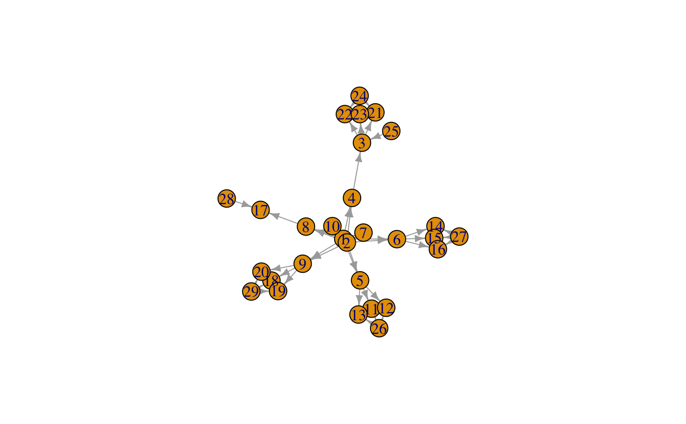
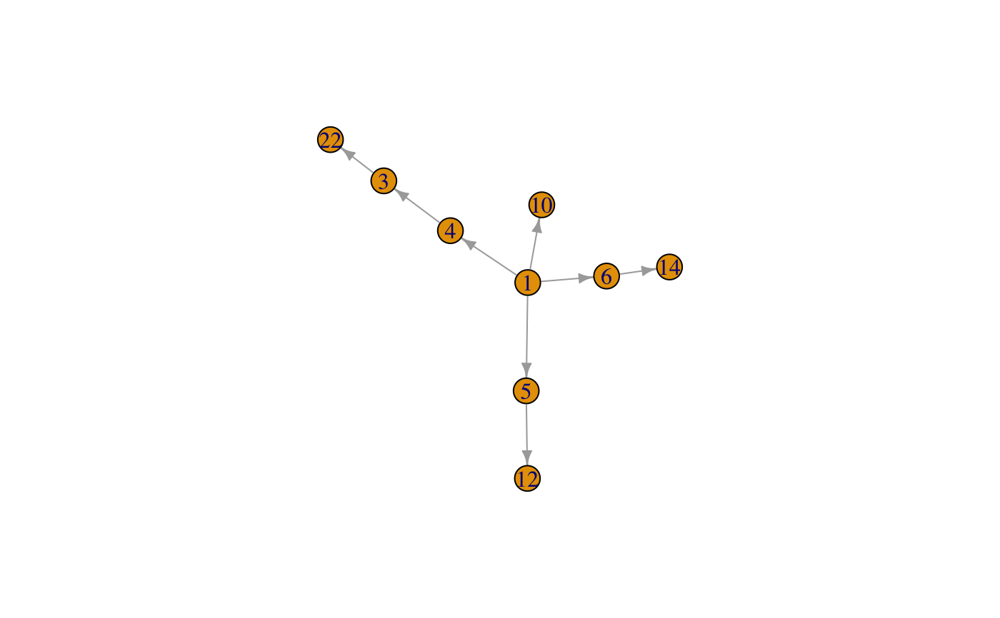

Pedigree-utils.RdUtility functions to access, modify or subset pedigrees. Most of these
functions can be applied to simple data.frame in pedigree
format or pedigree or pedigreeList objects defined in
the kinship2 package.
# S4 method for missing cliques(object, ...) connectedSubgraph(graph, nodes, mode="all", all.nodes=TRUE, ifnotfound) # S4 method for FAData countGenerations(object, id=NULL, direction="down", ...) # S4 method for FAData estimateGenerations(object, family=NULL, ...) # S4 method for FAData findFounders(object, family=NULL, id = NULL, ...) # S4 method for FAData generationsFrom(object, id=NULL, ...) # S4 method for FAData getAncestors(object, id=NULL, max.generations=3, ...) # S4 method for FAData getChildren(object, id=NULL, max.generations=16, ...) # S4 method for FAData getCommonAncestor(object, id, method="min.dist") # S4 method for FAData getFounders(object, ...) # S4 method for FAData getMissingMate(object, id=NULL, ...) # S4 method for FAData getSiblings(object, id=NULL, ...) # S4 method for FAData getSingletons(object, ...) ped2graph(ped) # S4 method for FAData removeSingletons(object, ...) # S4 method for data.frame removeSingletons(object, ...) subPedigree(ped, id=NULL, all=TRUE) # S4 method for FAData shareKinship(object, id)
| all | For |
|---|---|
| all.nodes | For |
| direction | For |
| family | A character or numeric representing the family id.
For |
| graph | An |
| id | A character or numeric vector length 1 or longer specifying the
id(s) of the individual(s).
For |
| ifnotfound | For |
| max.generations | For |
| method | For |
| mode | For |
| nodes | For |
| object | For |
| ped | Either a |
| ... | For |
Count the generations up- or down the pedigree for the specified individual(s), i.e. determine the number of ancestor or offspring generations defined in the pedigree for the specified individual(s). Returns a named numeric vector, names corresponding to the individual's id, with the number of generations for each specified individual.
Identifies the founder couple with the largest number of offspring
generations in the pedigree. The provided pedigree
object/data.frame can contain pedigrees of multiple families,
thus, to identify the founder pair for a family its ID can be
provided with the family parameter. Alternatively, the ID
of an individual can be specified, in which case the founder pair
of the (full) pedigree of the specified individual is identified.
If two or more couples have the same, largest number of
offspring generations, the first couple is selected.
Returns a character vector of length 2 with the ids of the founder
individuals.
Returns the ids of all founders in the pedigree. A founder is an individual from which neither father nor mother is known in the pedigree.
Returns the ids of all singletons, i.e. individuals in the pedigree that are not connected to any other individual (have no parents in the pedigree and no children).
Identify and return the ids of ancestor generations (up to
max.generations) for the specified individual(s).
Identify and return the ids of offspring generations (up to
max.generations) for the specified individual(s).
Finds the closest common ancestor between specified individuals (2
or more ids are required).
Returns a character vector with the ids of the ancestors or NA if
no common ancestor was found.
The function evaluates if in the sub-pedigree defined by the specified ids one or more mates (spouse) are missing and if so it returns their ids.
Get siblings for the specified id(s). Returns their ids as character, or numeric vector.
Removes all unconnected individuals (i.e. singletons) from the
pedigree. Returns a data.frame with the pedigree cleaned
from all singletons. Note that, due to internal sanitizing,
columns "father" and "mother" in the resulting
data.frame have a NA for individuals for which the
father or mother is not known in the pedigree.
Finds the smallest pedigree containing all specified individuals.
Depending on the input, a data.frame, pedigree
or pedigreeList.
Estimates generation levels/numbers for each, or only one, family
in the object. Generation numbers are always relative to the
founder couple (defined by findFounders).
Returns (always) a named list of generation numbers. The names of
the list represent the family id, the names of the numeric vector
of generations the id of the individuals in the family.
Determine generations starting from the specified
individual. Siblings including their mates and all other in the
same generation () are assigned generation 0, ancestor generations
(all their parents etc) negative generation numbers, decreasing with
ancestor level and their offspring positive numbers, increasing
with each generation.
Generations are only estimated within the family of the
individual, also, if the pedigree consists of un-connected
sub-pedigree, generation numbers will only be calculated for the
sub-pedigree containing the specified individual.
The function returns a named numeric vector of generation numbers,
the names corresponding to the ids of the individuals in the
specified individual's family. Not connected individuals in the
family get a NA generation number.
Finds all related individuals (individuals sharing kinship with the individual) for the specified individual(s) in the pedigree and returns their ids as a character vector.
Wrapper method passing all arguments to the cliques
function from the igraph package.
Finds the (eventually smallest) connected subgraph of all
specified nodes.
Returns an igraph object representing the subgraph of the
specified nodes.
Transforms the pedigree into a (directed) graph with the direction
of the edges being always from parent to child.
An igraph object.
Refer to the method and function description above for detailed information on the returned result object.
########################## ## ## Defining a small pedigree ## ## load the Minnesota Breast Cancer record and subset to the ## first families. data(minnbreast) mbsub <- minnbreast[minnbreast$famid==4 | minnbreast$famid==5, ] mbped <- mbsub[, c("famid", "id", "fatherid", "motherid", "sex")] ## renaming column names colnames(mbped) <- c("family", "id", "father", "mother", "sex") ## plot the pedigree for family 4 to get an overview. switchPlotfun(method="ks2paint")#>fam4 <- mbped[mbped$family==4, ] doPlotPed(individual=fam4$id, father=fam4$father, mother=fam4$mother, gender=fam4$sex, device="plot")#> Did not plot the following people: 30 31 32 33 34 35 36 37 38 39 40 41 42 43## find the closest common ancestor between individuals 23, 3 and 8 getCommonAncestor(fam4, id=c(23, 3, 8))#> [1] "1" "2"## create the smallest sub-pedigree for individuals 21, 22 and 25 subPedigree(fam4, id=c(21, 22, 25))#>#>#> family id father mother sex #> 25 4 25 NA NA M #> 3 4 3 25 4 F #> 21 4 21 24 3 M #> 22 4 22 24 3 F #> 4 4 4 NA NA F #> 24 4 24 NA NA M#>#>doPlotPed(individual=fam4sub$id, father=fam4sub$father, mother=fam4sub$mother, gender=fam4sub$sex, device="plot")######################### ## ## Basic pedigree utils ## ## Note: the same methods can be applied to a data.frame representing ## a pedigree, or a FAData, pedigree or pedigreeList object. ## Find the founder couple for family 4 findFounders(fam4, family=4)#> [1] "1" "2"## Alternatively, find the founders for the pedigree in which ibdividual 20 is a ## member findFounders(fam4, id = 20)#> [1] "1" "2"## Return all founders in the pedigree. getFounders(fam4)#> [1] 1 2 24 25 26 27 28 29 30 31 32 33 34 35 36 37 38 39 40 41 42 43## Get all founders without children (i.e. singletons). getSingletons(fam4)#> [1] 30 31 32 33 34 35 36 37 38 39 40 41 42 43## Clean the pedigree from all singletons fam4noS <- removeSingletons(fam4)#>#>nrow(fam4)#> [1] 43nrow(fam4noS)#> [1] 29## Count the offspring generations for individual "4" countGenerations(fam4, id="4")#> 4 #> 2## Get the ids of all ancestors for that individual getAncestors(fam4, id="4")#> [1] "1" "2"## Get the ids of the children of this individual getChildren(fam4, id="4", max.generations=1)#> [1] "3"## Get the ids of the complete offspring for this individuals getChildren(fam4, id="4")#> [1] "3" "21" "22" "23"#>#>## get the list of all ids sharing kinship with individuals ## 5 and 9 shareKinship(fad, id=c("5", "9"))#> [1] "1" "2" "3" "4" "5" "6" "7" "8" "9" "10" "11" "12" "13" "14" "15" #> [16] "16" "17" "18" "19" "20" "21" "22" "23"## Count the numbers of generations of ancestors for individual 12 countGenerations(fad, id="12", direction="up")#> 12 #> 2## Count the numbers of offspring generations for individuals 2 and 29 countGenerations(fad, id=c("2", "29"))#> 2 29 #> 3 1## Get all brothers/sisters for individual 9 getSiblings(fad, id="9")#> [1] "4" "5" "6" "7" "8" "9" "10"## Determine generation levels starting from individual "9" generationsFrom(fad, id="9")#> 1 2 3 4 5 6 7 8 9 10 11 12 13 14 15 16 17 18 19 20 21 22 23 24 25 26 #> -1 -1 1 0 0 0 0 0 0 0 1 1 1 1 1 1 1 1 1 1 2 2 2 1 0 0 #> 27 28 29 30 31 32 33 34 35 36 37 38 39 40 41 42 43 #> 0 0 0 NA NA NA NA NA NA NA NA NA NA NA NA NA NA## Estimate generations relative to the founder couple for each ## family in the submitted object, a data.frame in the example below estimateGenerations(mbped)#> $`4` #> 1 2 3 4 5 6 7 8 9 10 11 12 13 14 15 16 17 18 19 20 21 22 23 24 25 26 #> 0 0 2 1 1 1 1 1 1 1 2 2 2 2 2 2 2 2 2 2 3 3 3 2 1 1 #> 27 28 29 30 31 32 33 34 35 36 37 38 39 40 41 42 43 #> 1 1 1 NA NA NA NA NA NA NA NA NA NA NA NA NA NA #> #> $`5` #> 44 45 46 47 48 49 50 51 52 53 54 55 56 #> 0 0 2 2 2 2 2 2 2 2 1 3 3 #> 57 58 59 60 61 62 63 64 65 66 67 68 69 #> 3 3 3 3 3 3 3 3 2 2 2 NA 2 #> 70 71 72 73 74 75 76 77 78 79 26050 26051 #> 1 NA NA NA NA NA NA NA NA 2 NA NA #>######################### ## ## Graph utilities ## ## Convert the pedigree into a graph pgraph <- ped2graph(fam4) plot(pgraph)## Make a subgraph containing nodes 10, 22, 12 and 14 sgraph <- connectedSubgraph(pgraph, c("10", "22", "12", "14")) plot(sgraph)